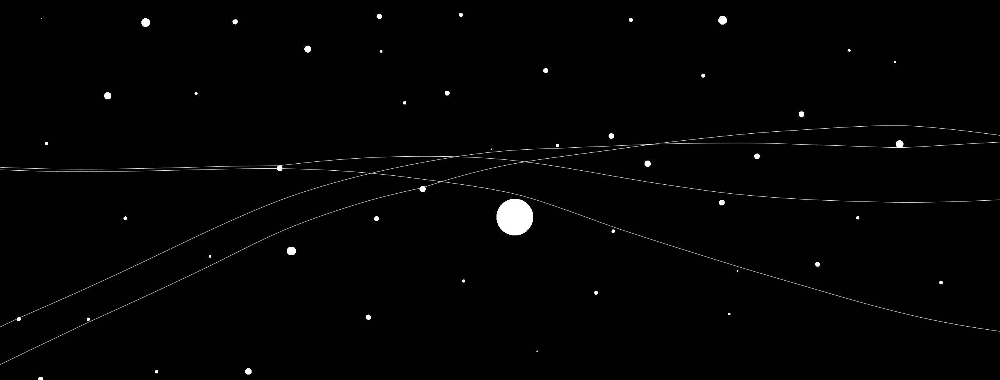

Meta's OPT vs OpenAI GPT-3
What are Large Language Models, what are they used for, what are the existing solutions, and why Meta's new OPT matters

Yesterday Meta publicly released their 175 billion parameter Open Pre-Trained Transformer Language Model (OPT) and extensive associated documentation to compete with OpenAI's Generative Pre-trained Transformer 3 (GPT-3) API!
If you're already deeply interested in Natural Language Processing, you're jumping out of your seat right now! If not, you are probably asking... What is NLP? What is different between GPT-3 and OPT? Will this open-sourcing cause a dramatic shift in LLM research?
Hopefully, I can quickly answer a few of those! Keep in mind the future is built from the unknown and can only be learned as people begin to adopt this bleeding-edge technology... but let's dive in!
To start off, what are LLMs, what can we use them for, and what has been backing up research up to this point? Large Language Models are massive AI models that are trained on vast written datasets that can be leveraged to complete various language processing tasks from sentiment detection on a phrase or paragraph to mimicking human conversation, generating complete scholarly articles around an input topic, and so much more!
Many of the use cases described in OPTs whitepaper revolve around bias and racism detection on text that might be used to prevent hate crimes or other nefarious social activity. What was GPT-3 and what's the difference between it and Meta's new OPT? Human speech inherently has many intricacies, and this can be reflected in a large number of parameters that must be trained for NLP models to be effective.
GPT-3 is OpenAI's solution, which trained 175 billion weighted parameters that help predict, classify, or otherwise make use of their dataset. The problem with GPT-3 is that it is only available for use as a paid service, and even then only through APIs, not through direct access to the model itself. This provides a significant barrier to entry for the average dev, and has kept the NLP community small. OPT completely changes the game in this regard!
The Meta AI team sought to produce an equivalent model, also training on 175B parameters (and other, smaller numbers of parameters to make it cheaper and easier to work with for small teams). They have released not only the model itself, but all related documentation about how it was created and various code packages for easier onboarding.
This will hopefully drive NLP adoption and introduce new scientists to the community, help establish some best practices of NLP AI use, and further our understanding of how communication works. That said, there are some negative consequences that has become apparent as well and can be easily found with a few quick Googles. Meta has taken some measures to mitigate potential risks, but nothing in big tech can reduce that factor to 0.
Want to talk about this more?
Please reach out!
Sources:
https://lnkd.in/gAFUkXDi
https://openai.com/api/
https://lnkd.in/gTNTUmqF
Why go Serverless?
Serverless architectures seem to be all the rage in the Cloud Computing world today, heres a brief discussion on why, and what they might offer you and your business.

AWS Lambda, Microsoft Azure Functions, and Google Cloud Functions square up against traditional server architectures in
a battle to the death. (Just kidding, servers are still useful in some solutions)
Traditional application server architectures contain a central server that loiter around listening for incoming
requests, processing them whenever they come in, and burning your money while they aren't. This server can be an on-premises
or a remote hosted one, such as AWS EC2 instance, Google Compute Engine, or IBM Cloud Virtual Server.
When that server has the perfect amount of connections that you guessed it would have, great! This is, however,
extremely unlikely... A good swell of business overwhelms your poor little server one day and he crashes, losing a lot of
potential customers! You will anticipate this growing traffic next time, we're ready now! You provision larger and larger
machines to handle these tasks, so upgrading your server's capacity - and cost.
When server traffic does not grow as expected, you pay for the anticipated space and that server capacity is wasted as the machine sits idle. When you decide to downgrade a few months later after paying for wasted capacity, you get hit with a spike of traffic again (yay!) but are unable to handle it...yet again (on no!) causing downtime and loss of both users and revenue.
How can we get around this seemingly impossible task of perfectly provisioning the correct server size?
You guessed it! Go Serverless!
Switching from this traditional architecture to a serverless one allows you to forget about provisioning resources,
letting the service provider deal with all "under the hood" logic required when scaling, so that you always pay
only for the resources that you actually use.
Under a serverless model, you get to simply develop the APIs that your application needs, and deploy them independantly of the system or each other, and your chosen service provider will handle the rest.
You no longer need to constantly pay for unused server capacity, and will never again be underprepared for the day your app hits the front page on the app store and gains immense traffic. As your user flow increases AWS, Google, or IBM will scale your functions accordingly with predicable price points per request.
Luddites beware, my next post will dive into the underlying tech which allow these services to perform to scale.
It might go over your head, but is defintiely interesting and well worth the read...
Atomic Habits app
The book Atomic Habits explains how your habits are directly related to the person that you ARE, which is both good and bad
Casting a vote for the person you want to become
For instance, if you CHOOSE to "not be a smoker" or "to be a professional athlete" those can be verifiably true or false by looking at the history of your own actions, and seeing if the number of "votes cast" votes against or in the favor of your statement.
Granted, habits should not be considered to be boolean logic in the eyes of the person casting the votes, and a person's ability to complete such tasks are also completely independent and often massively different for each individual.
Consider for instance the common practice of creating New Year's Resolutions at the beginning of a new year. Today is New Year's Day, and I know that many of my friends and we enjoy sharing our goals we have for the coming year. For this year, I decided not to go for some grand single thing, but rather a collection of habits that I believe would put me into a better place at the end of next year, rather than a single thing to cut out or try to start doing from the blue. Take a look at the action, not the outcome, and the outcome will almost always follow.
"Get in shape" is the goal "Work out 5x weekly" or "Exercise 30 minutes daily" is a better process, as it can be reduced easily to a boolean condition that will be easily regularly attainable, and quickly verifiable. Not that the bitcoin soluation solves a similar solution in represeting currency. If bitcoin's improvements over fiat solve the problem of commonly available and quickly verifiable in money, then the measure of personal habits solves the same problem in representing a person's true values even if they do not know themselves as such.
All of these things are small things that add up to what you caln verifiably call yourself.
Awareness of your habits is where you must begin, so lets take a look at things that I do on a daily, weekly, monthly, and yearly basis
Note taht when an item on this list does not overlap with your daily habits, choose something more accurate and replace it wiht one of your own. also note that some of these habits are definitely negative items, they should be inculded as well, as the sum total of your habits is not limited to your positive traits. Other's may seem trivial but when you stop to think about it will realize that for many people in the world, these seemingly commonplace habits, routines, and life status / characterists are not present and may even be someones life dream, never to be collected.
Here are my choices for my habits to track this year. in some, the arrow counts against you where in others, they count towards you. Score each one according to the perceived positive effect it would have on your life.
(1.5h)
Daily:
(5m) 100 pushups (generally in 2x50 sets, one immediately after waking)
(5m) Meditate for 60s (typically immediately following pushups)
(30m) Get outside for 30 minutes
(5m) Draw something (60s or longer)
(5m) Write something (10+ words)
Read something
(5m) Clean House
(10m) Eat a salad
(15m) Drive
Can easily get accurate factual data in Screen Time ! Will likely be worse than you would've imagined, if you havent recently checked in on yourself. At least thats how it is for me
(30m) Instagram (actual 3h!!!)
(10m) Facebook (actual 30m!!!)
(1h) Other
(30m) Read 100 pages of a book
Weekly:
(3h) Run 10miles
(3h) Lift weights 3x for at least 30m
(6h) Surf / Snowboard / Ski
(3h) Skate
(30m)Tell two family members I love them
(5m)Text someone I have not talked to in over a week
(9h) Hang out with friends 3x
(3h) Drink
(2h) Clean House
(40h) Commit 10x for work
(10h) Commit 2x for personal
(26h)
Monthly:
Personal Status Sheet (1h)
Financial Status Sheet (1h)
Blog Article (4h)
Read a Book (20h)
Yearly:
Visit Family (3x)
Print off photos
Goal Setting
Primary Care Physician visit
Dentist Checkup
Now we know what to track, how to track it, and how much time each of the tasks that you do on a regular basis takes in time, let's build a daily, weekly, and monthly calendar to represent your life and then decided where to make additions or cuts. We'll give you a personalized template that you can quickly fit into how you would like your life to look.
First
Screen that has a Section List of flatlists of tasks with a time selector and boolean / incremental selection
Screen that has today's tasks (can toggle to weekly/monthly/year views as well in V2)
Screen that has stats
(daily value, longest streak, current streak, counts of make/miss and make/miss percetages)
My process for starting a daily project:
(either directly in your website folder, or in a new github repo if you prefer. Here I'm showing a new repo creation, as some of you may not already have a site or repository set up)
In GitHub web
Click Top Right "+"
Click New repository
Name Repo
Give description
Click create
click "<> Code"
Copy ssh line by pressing the intersecting squares
(click on new Desktop on external monitor, or swipe to new screen if none exists)
Command + Space ➝ Search "t" ➝ Press enter
(In new terminal window)
cd ./Desktop/Github) (./De tab ➝ enter shortcuts to /Desktop and /G tab ➝ enter shortcuts to /Git)
Run ➝ git clone (paste repo name)
You should see an output like that below
Run cd ./(Repo name) to navigate into the new project
Run ➝ "code ." to open new VS Code Window in a window
In the new VS Code window
press control & ~ to open terminal in VS Code
Create new react native project
➝ yarn create expo-app
enter a project name when prompted
Congrats, youve got an app!
Check out App.js to see the code for your new application
Open it by running " cd ./(Repo Name)" to go into the project directory then "yarn expo start" to launch the server!
This will start a development server for you.
Next, download "Expo Go" on your iphone or android
Scan the QR code generated in your web browser or in the terminal to open up the new Expo app directly on your phone, as long as you have it connected to the same wifi network.
Lets start by deleting the current contents and getting work on our outline!
We know that our app should look something like this. Go ahead and draw a quick sketch of what you think that should look like.
First
//View with all tasks with a time incrementer or boolean selection box (organized into sections by daily monthly or weekly in V2)
Screen that has today's tasks and tick boxes (can toggle to weekly/monthly/year views as well in V2)
Screen that has stats over time (daily value, longest streak, current streak, counts of make/miss and make/miss percetages in V2)
each page should have an extra box on the bottom to let you add a new task
Immediately I can see that I'm going to want a vertical ScrollView for the tasks and a Horizontal ScrollView for the pages OR two Seperate pages that each have a single vertical ScrollView. For this use case, I'm going to go with the nested scrollviews so I dont need to worry about setting up navigation state
A visual representation of that layout translated into a code diagram look like this
And the translation into psuedocode looks like this
To save a little bit of time in formatting, I'm going to get openAi's chatbot to create some boilderplate...
Ask it "Create a react native page that contains a horizontal scrollview that contains 3 views the width of the screen, and snaps to the page on scroll"
Here's the response:
Here is an example of a horizontal scrollview that contains 3 views, each with a width of the screen, and snaps to the page on scroll:
Simulating Gravity with Processing
Tune in next week for an interesting discussion on how to simulate the effect of gavitational fields of particle systems next week!